Getting started
VSN is a method to preprocess microarray intensity data. This can be as simple as
where kidney is an ExpressionSet object
with unnormalised data and xnorm the resulting
ExpressionSet with calibrated and
glog-transformed
data.
produces the vector of generalised log-ratios between the data in the first and second column.
VSN is a model-based method, and the more explicit way of doing the above is
where fit is an object of class vsn that
contains the fitted calibration and transformation parameters, and the
method predict applies the fit to the data. The two-step
protocol is useful when you want to fit the parameters on a subset of
the data, e.g. a set of control or spike-in features, and then apply the
model to the complete set of data1. Furthermore, it enables further inspection
of the fit object, e.g., for the purpose of quality
assessment.
Besides ExpressionSets, there are also
justvsn methods for AffyBatch objects from the
affy
package and RGList objects from the limma
package. They are described in this vignette.
The so-called glog (short for generalised logarithm) is a function that is like the logarithm (base 2) for large values (large compared to the amplitude of the background noise), but is less steep for smaller values. While the function diverges to negative infinity at zero, the glog function approximates a straight line of finite slope around 02. Differences between the transformed values are the generalised log-ratios. These are shrinkage estimators of the logarithm of the fold change. The usual log-ratio is another example for an estimator3 of log fold change. There is also a close relationship between background correction of the intensities and the variance properties of the different estimators. Please see Section @ref(sec:shrink) for more explanation of these issues.
How does VSN work? There are two components: First, an affine transformation whose aim is to calibrate systematic experimental factors such as labelling efficiency or detector sensitivity. Second, a glog transformation whose aim is variance stabilisation.
An affine transformation is simply a shifting and scaling of the
data, i.e. a mapping of the form
with offset
and scaling factor
.
By default, a different offset and a different scaling factor are used
for each column, but the same for all rows within a column. There are
two parameters of the function vsn2 to control this
behaviour: With the parameter strata, you can ask
vsn2 to choose different offset and scaling factors for
different groups (“strata”) of rows. These strata could, for example,
correspond to sectors on the array4. With the parameter calib, you
can ask vsn2 to choose the same offset and scaling factor
throughout5. This can be useful, for example, if the
calibration has already been done by other means, e.g., quantile
normalisation.
Limitations
Other determinants of variance
The VSN transformation only addresses the dependence of the variance on the mean intensity. There may be important other factors influencing the variance, including gene-inherent properties, sample-inherent properties such as different tightness of transcriptional control in different conditions, or technical factors. These need to be addressed by other, more specialized models.
Numerical stability and convergence
VSN does not work for all possible inputs. If you encounter an error message like “L-BFGS-B needs finite values of ‘fn’”6, please check whether one of these problems is present:
- A bug in the code that does the preprocessing of the data that go in.
- A problem with data quality or experimental design, e.g., incompatible measurements assembled together into one input matrix.
- The noise or variance characteristics of the data are just not suitable for the VSN model.
Running VSN on data from a single two-colour array
The dataset kidney contains example data from a spotted
cDNA two-colour microarray on which cDNA from two adjacent tissue
samples of the same kidney were hybridised, one labeled in green (Cy3),
one in red (Cy5). The two columns of the matrix
exprs(kidney) contain the green and red intensities,
respectively. A local background estimate7 was calculated by the
image analysis software and subtracted, hence some of the intensities in
kidney are close to zero or negative. In Figure
@ref(fig:nkid-scp) you can see the scatterplot of the calibrated and
transformed data. For comparison, the scatterplot of the log-transformed
raw intensities is also shown. The code below involves some data
shuffling to move the data into datasframes for ggplot.
library("ggplot2")
allpositive = (rowSums(exprs(kidney) <= 0) == 0)
df1 = data.frame(log2(exprs(kidney)[allpositive, ]),
type = "raw",
allpositive = TRUE)
df2 = data.frame(exprs(xnorm),
type = "vsn",
allpositive = allpositive)
df = rbind(df1, df2)
names(df)[1:2] = c("x", "y")
ggplot(df, aes(x, y, col = allpositive)) + geom_hex(bins = 40) +
coord_fixed() + facet_grid( ~ type)
Scatterplots of the kidney example data, which were obtained from a two-color cDNA array by quantitating spots and subtracting a local background estimate. a) unnormalised and -transformed. b) normalised and transformed with VSN. Panel b shows the data from the complete set of 8704 spots on the array, Panel a only the 7806 spots for which both red and green net intensities were greater than 0. Those spots which are missing in Panel a are coloured in orange in Panel b.
To verify the variance stabilisation, there is the function
meanSdPlot. For each feature
it shows the empirical standard deviation
on the
-axis
versus the rank of the average
on the
-axis.
meanSdPlot(xnorm, ranks = TRUE)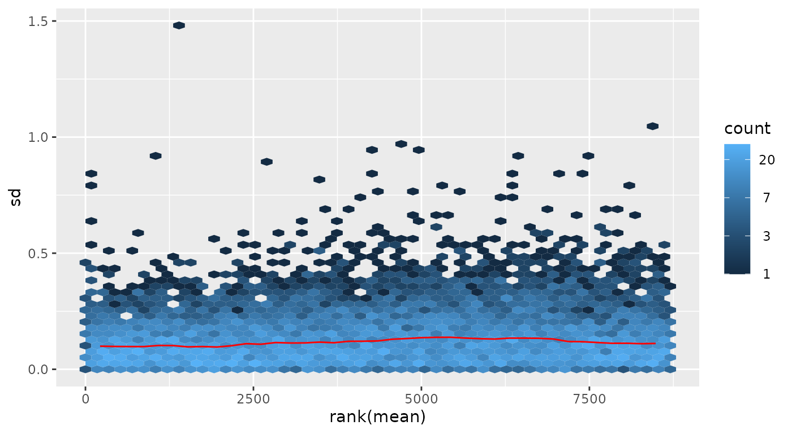
Standard deviation versus rank of the mean
meanSdPlot(xnorm, ranks = FALSE) 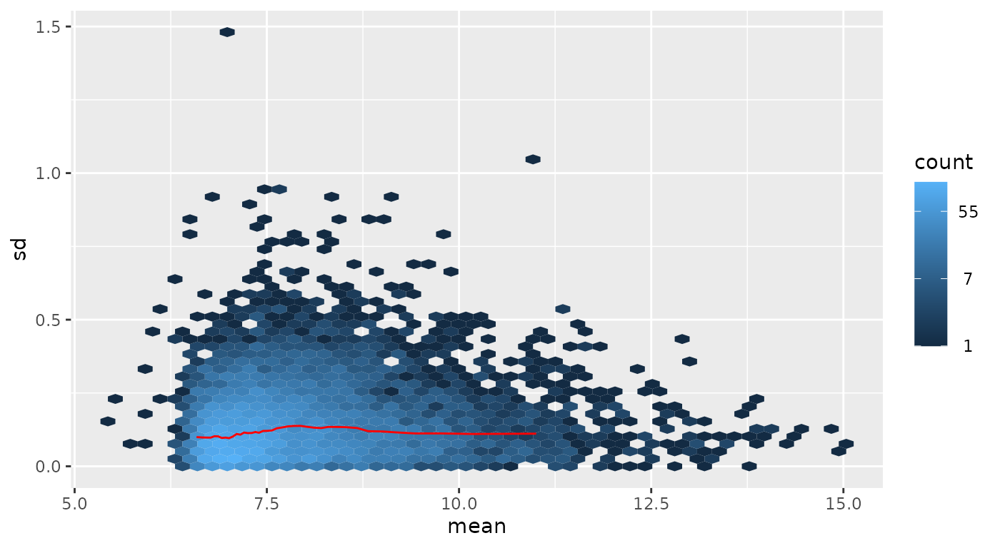
Standard deviation versus mean
The red dots, connected by lines, show the running median of the
standard deviation8. The aim of these plots is to see whether
there is a systematic trend in the standard deviation of the data as a
function of overall expression. The assumption that underlies the
usefulness of these plots is that most genes are not differentially
expressed, so that the running median is a reasonable estimator of the
standard deviation of feature level data conditional on the mean. After
variance stabilisation, this should be approximately a horizontal line.
It may have some random fluctuations, but should not show an overall
trend. If this is not the case, that usually indicates a data quality
problem, or is a consequence of inadequate prior data preprocessing. The
rank ordering distributes the data evenly along the
-axis.
A plot in which the
-axis
shows the average intensities themselves is obtained by calling the
plot command with the argument ranks=FALSE;
but this is less effective in assessing variance and hence is not the
default.
The histogram of the generalized log-ratios:
hist(M, breaks = 100, col = "#d95f0e")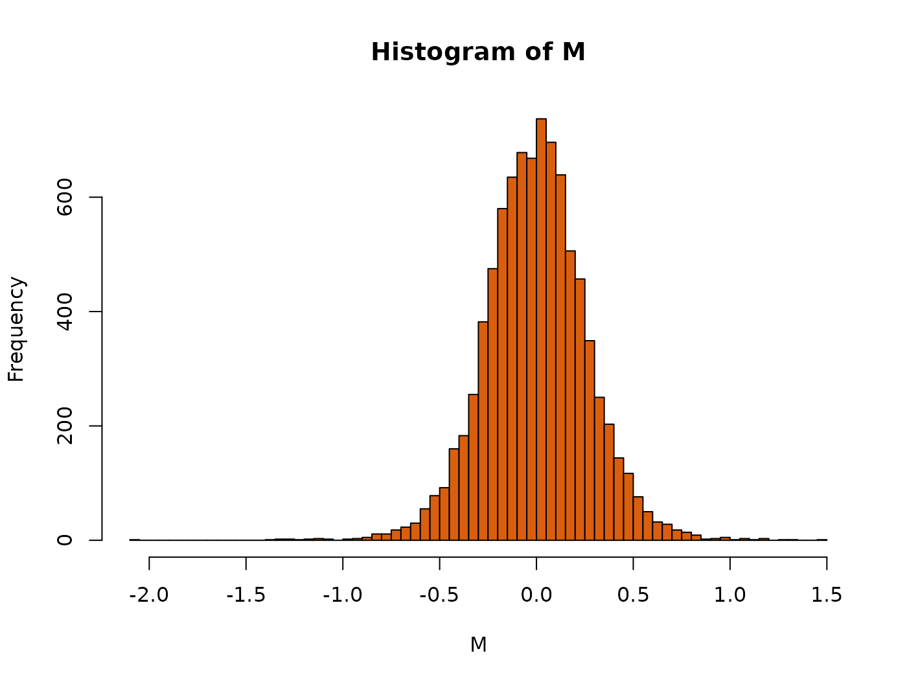
Histogram of generalised log-ratios for the kidney example data.
Running VSN on data from multiple arrays (“single colour normalisation”)
The package includes example data from a series of 8 spotted cDNA arrays on which cDNA samples from different lymphoma were hybridised together with a reference cDNA (Alizadeh et al. 2000).
## Features Samples
## 9216 16The 16 columns of the lymphoma object contain the red
and green intensities, respectively, from the 8 slides.
pData(lymphoma)## name sample dye
## lc7b047.reference lc7b047 reference Cy3
## lc7b047.CLL-13 lc7b047 CLL-13 Cy5
## lc7b048.reference lc7b048 reference Cy3
## lc7b048.CLL-13 lc7b048 CLL-13 Cy5
## lc7b069.reference lc7b069 reference Cy3
## lc7b069.CLL-52 lc7b069 CLL-52 Cy5
## lc7b070.reference lc7b070 reference Cy3
## lc7b070.CLL-39 lc7b070 CLL-39 Cy5
## lc7b019.reference lc7b019 reference Cy3
## lc7b019.DLCL-0032 lc7b019 DLCL-0032 Cy5
## lc7b056.reference lc7b056 reference Cy3
## lc7b056.DLCL-0024 lc7b056 DLCL-0024 Cy5
## lc7b057.reference lc7b057 reference Cy3
## lc7b057.DLCL-0029 lc7b057 DLCL-0029 Cy5
## lc7b058.reference lc7b058 reference Cy3
## lc7b058.DLCL-0023 lc7b058 DLCL-0023 Cy5We can call justvsn on all of them at once:
lym = justvsn(lymphoma)
meanSdPlot(lym)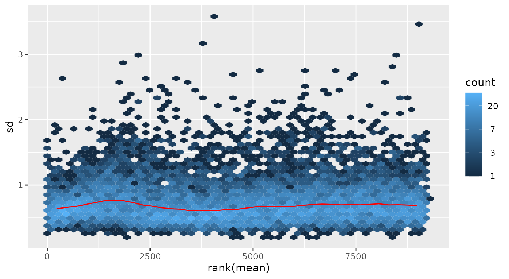
Standard deviation versus rank of the mean for the lymphoma example data
We see that the variance stabilisation worked. As above, we can obtain the generalised log-ratios for each slide by subtracting the common reference intensities from those for the 8 samples:
iref = seq(1, 15, by=2)
ismp = seq(2, 16, by=2)
M = exprs(lym)[,ismp]-exprs(lym)[,iref]
A =(exprs(lym)[,ismp]+exprs(lym)[,iref])/2
colnames(M) = lymphoma$sample[ismp]
colnames(A) = colnames(M)
j = "DLCL-0032"
smoothScatter(A[,j], M[,j], main=j, xlab="A", ylab="M", pch=".")
abline(h=0, col="red")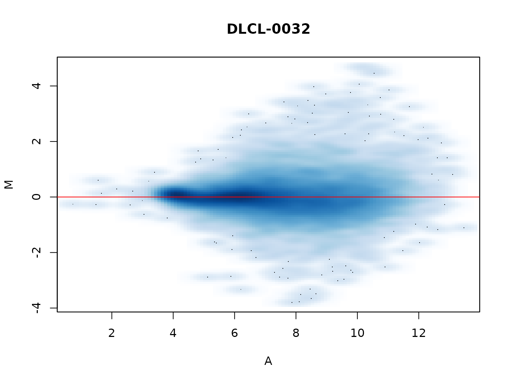
MA-plot for slide DLCL-0032 from the lymphoma example data. A false-colour representation of the data point density is used, in addition the 100 data points in the least dense regions are plotted as dots.
Running VSN on Affymetrix genechip data
The package affy
provides excellent functionality for reading and processing Affymetrix
genechip data, and you are encouraged to refer to the documentation of
the package affy for
more information about data structures and methodology. % The
preprocessing of Affymetrix genechip data involves the following steps:
(i) background correction, (ii) between-array normalization, (iii)
transformation and (iv) summarisation. The VSN method addresses steps
(i)–(iii). For the summarisation, I recommend to use the RMA method
(Irizarry et al. 2003), and a simple
wrapper that provides all of these is provided through the method
vsnrma.
library("affydata")
data("Dilution")
d_vsn = vsnrma(Dilution)For comparison, we also run rma.
d_rma = rma(Dilution)
par(mfrow = c(1, 3))
ax = c(2, 16)
plot(exprs(d_vsn)[,c(1,3)], main = "vsn: array 1 vs 3", asp = 1, xlim = ax, ylim = ax, pch = ".")
plot(exprs(d_rma)[,c(1,3)], main = "rma: array 1 vs 3", asp = 1, xlim = ax, ylim = ax, pch = ".")
plot(exprs(d_rma)[,1], exprs(d_vsn)[,1],
xlab = "rma", ylab = "vsn", asp = 1, xlim = ax, ylim = ax, main = "array 1", pch = ".")
abline(a = 0, b =1, col = "#ff0000d0")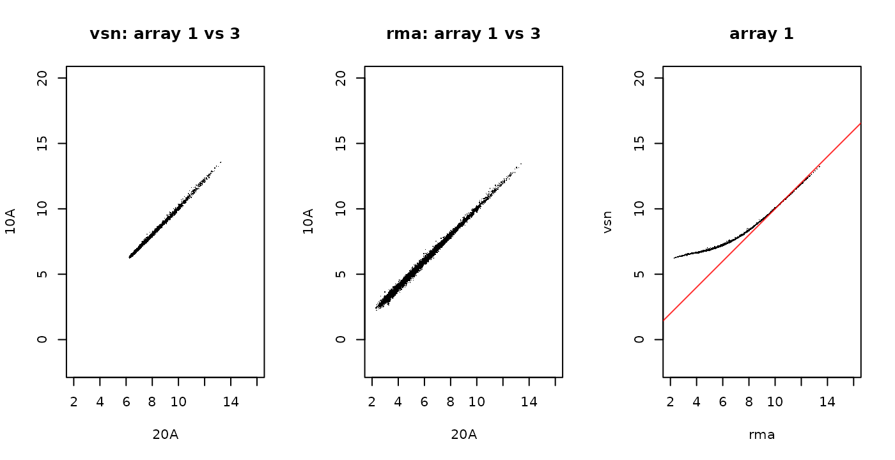
Results of vsnrma and rma on the Dilution
data. Array 1 was hybridised with
20g
RNA from liver, Array 3 with
10g
of the same RNA.
Both methods control the variance at low intensities, but we see that VSN does so more strongly. See also Section @ref(sec:shrink) for further discussion on the VSN shrinkage.
Running VSN on RGList objects
There is a justvsn method for RGList
objects. Usually, you will produce an RGList from your own
data using the read.maimages from the limma
package. Here, for the sake of demonstration, we construct an
RGList from lymphoma.
library("limma")
wg = which(lymphoma$dye=="Cy3")
wr = which(lymphoma$dye=="Cy5")
lymRG = new("RGList", list(
R=exprs(lymphoma)[, wr],
G=exprs(lymphoma)[, wg]))
lymNCS = justvsn(lymRG)The justvsn method for RGList converts its
argument into an NChannelSet, using a copy of the coercion
method from Martin Morgan in the package convert.
It then passes this on to the justvsn method for
NChannelSet. The return value is an
NChannelSet, as shown below.
lymNCS## NChannelSet (storageMode: lockedEnvironment)
## assayData: 9216 features, 8 samples
## element names: G, R
## protocolData: none
## phenoData: none
## featureData: none
## experimentData: use 'experimentData(object)'
## Annotation:Note that, due to the flexibility in the amount and quality of
metadata that is in an RGList, and due to differences in
the implementation of these classes, the transfer of the metadata into
the NChannelSet may not always produce the expected
results, and that some checking and often further dataset-specific
postprocessing of the sample metadata and the array feature annotation
is needed. For the current example, we construct the
AnnotatedDataFrame object adf and assign it
into the phenoData slot of lymNCS.
vmd = data.frame(
labelDescription = I(c("array ID", "sample in G", "sample in R")),
channel = c("_ALL", "G", "R"),
row.names = c("arrayID", "sampG", "sampR"))
arrayID = lymphoma$name[wr]
stopifnot(identical(arrayID, lymphoma$name[wg]))
## remove sample number suffix
sampleType = factor(sub("-.*", "", lymphoma$sample))
v = data.frame(
arrayID = arrayID,
sampG = sampleType[wg],
sampR = sampleType[wr])
v## arrayID sampG sampR
## 1 lc7b047 reference CLL
## 2 lc7b048 reference CLL
## 3 lc7b069 reference CLL
## 4 lc7b070 reference CLL
## 5 lc7b019 reference DLCL
## 6 lc7b056 reference DLCL
## 7 lc7b057 reference DLCL
## 8 lc7b058 reference DLCLNow let us combine the red and green values from each array into the glog-ratio M and use the linear modeling tools from limma to find differentially expressed genes (note that it is often suboptimal to only consider M, and that taking into account absolute intensities as well can improve analyses).
design = model.matrix( ~ lymNCS$sampR)
lf = lmFit(lymM, design[, 2, drop=FALSE])
lf = eBayes(lf)The following plots show the resulting -values and the expression profiles of the genes corresponding to the top 5 features.
par(mfrow=c(1,2))
hist(lf$p.value, breaks = 100, col="orange")
pdat = t(lymM[order(lf$p.value)[1:5],])
matplot(pdat, lty = 1, type = "b", lwd = 2, col=hsv(seq(0,1,length=5), 0.7, 0.8),
ylab = "M", xlab = "arrays")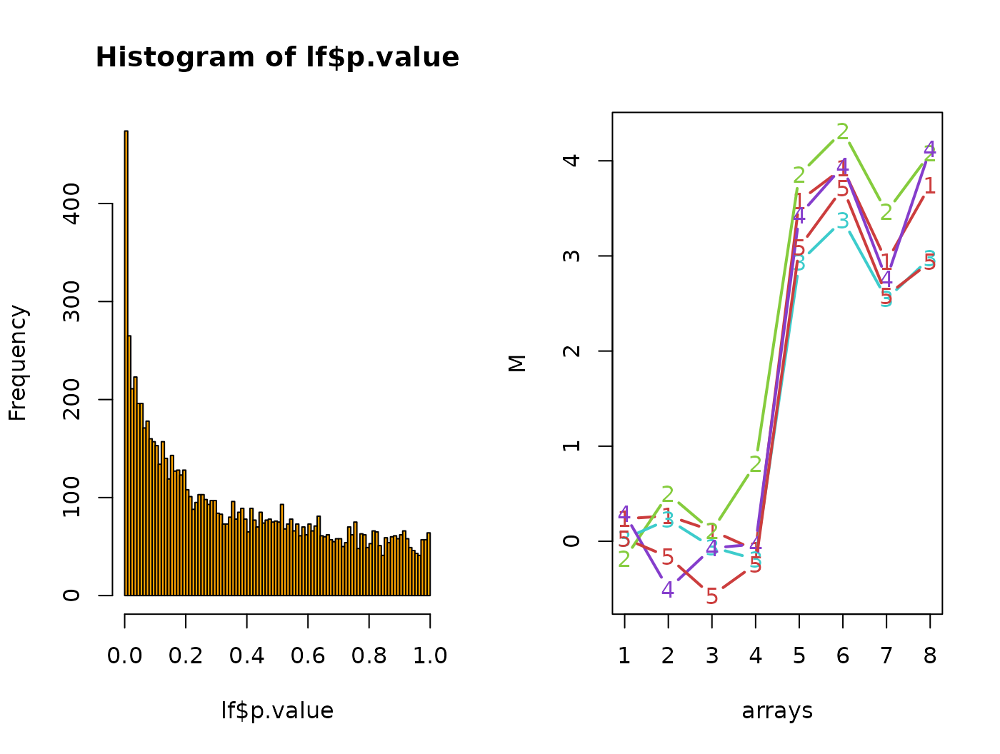
Left: histogram of p-values from the moderated
-test
between the CLL and DLCL groups on the lymM values. Right:
M-values for the 5 genes with the smallest p-values.
Background subtraction
Many image analysis programmes for microarrays provide local background estimates, which are typically calculated from the fluorescence signal outside, but next to the features. These are not always useful. Just as with any measurement, these local background estimates are also subject to random measurement error, and subtracting them from the foreground intensities will lead to increased random noise in the signal. On the other hand side, doing so may remove systematic artifactual drifts in the data, for example, a spatial gradient.
So what is the optimal analysis strategy, should you subtract local background estimates or not? The answer depends on the properties of your particular data. VSN itself estimates and subtracts an over-all background estimate (per array and colour, see Section @ref(sec:calib)), so an additional local background correction is only useful if there actually is local variability across an array, for example, a spatial gradient.
Supposing that you have decided to subtract the local background
estimates, how is it done? When called with the argument
backgroundsubtract=TRUE9, the justvsn method will
subtract local background estimates in the Rb and
Gb slots of the incoming RGList. To
demonstrate this, we construct an RGList object
lymRGwbg.
rndbg = function(x, off, fac)
array(off + fac * runif(prod(dim(x))), dim = dim(x))
lymRGwbg = lymRG
lymRGwbg$Rb = rndbg(lymRG, 100, 30)
lymRGwbg$Gb = rndbg(lymRG, 50, 20)In practice, of course, these values will be read from the image
quantitation file with a function such as read.maimages
that produces the RGList object. We can call
justvsn
lymESwbg = justvsn(lymRGwbg[, 1:3], backgroundsubtract=TRUE)Here we only do this for the first 3 arrays to save compute time.
Print-tip groups
By default, VSN computes one normalisation transformation with a
common set of parameters for all features of an array (separately for
each colour if it is a multi-colour microarray), see Section
@ref(sec:calib). Sometimes, there is a need for stratification by
further variables of the array manufacturing process, for example,
print-tip groups (sectors) or microtitre plates. This can be done with
the strata parameter of vsn2.
The example data that comes with the package does not directly provide the information which print-tip each feature was spotted with, but we can easily reconstruct it:
ngr = ngc = 4L
nsr = nsc = 24L
arrayGeometry = data.frame(
spotcol = rep(1:nsc, times = nsr*ngr*ngc),
spotrow = rep(1:nsr, each = nsc, times=ngr*ngc),
pin = rep(1:(ngr*ngc), each = nsr*nsc))and call
EconStr = justvsn(lymRG[, 1], strata = arrayGeometry$pin)To save CPU time, we only call this on the first array. We compare
the result to calling justvsn without
strata,
EsenzaStr = justvsn(lymRG[, 1])A scatterplot comparing the transformed red intensities, using the two models, is shown in Figure @ref(fig:figstrata2).
j = 1
plot(assayData(EsenzaStr)$R[,j],
assayData(EconStr)$R[,j],
pch = ".", asp = 1,
col = hsv(seq(0, 1, length=ngr*ngc),
0.8, 0.6)[arrayGeometry$pin],
xlab = "without strata",
ylab = "print-tip strata",
main = sampleNames(lymNCS)$R[j])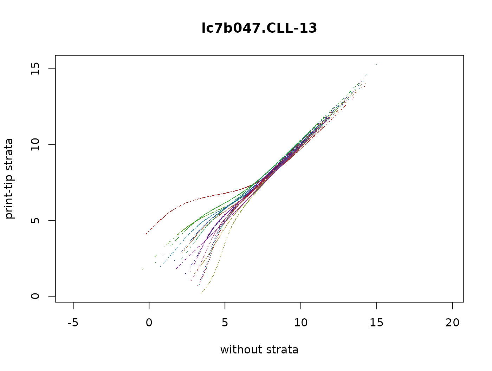
Scatterplot of normalised and transformed intensities for the red
channel of Array 1. Values on the
-axis
correspond to normalisation without strata (EsenzaStr),
values on the
-axis
to normalisation with strata (EconStr). The different
colours correspond to the 16 different strata.
Missing values
The parameter estimation algorithm of VSN is able to deal with
missing values in the input data. To demonstrate this, we generate an
ExpressionSet lym2 in which about 10% of all
intensities are randomly missing,
lym2 = lymphoma
nfeat = prod(dim(lym2))
wh = sample(nfeat, nfeat/10)
exprs(lym2)[wh] = NA
table(is.na(exprs(lym2)))##
## FALSE TRUE
## 132711 14745and call vsn2 on it.
The resulting fitted parameters are not identical, but very similar, see Figure @ref(fig:miss). %
par(mfrow=c(1,2))
for(j in 1:2){
p1 = coef(fit1)[,,j]
p2 = coef(fit2)[,,j]
d = max(abs(p1-p2))
stopifnot(d < c(0.05, 0.03)[j])
plot(p1, p2, pch = 16, asp = 1,
main = paste(letters[j],
": max diff=", signif(d,2), sep = ""),
xlab = "no missing data",
ylab = "10% of data missing")
abline(a = 0, b = 1, col = "blue")
}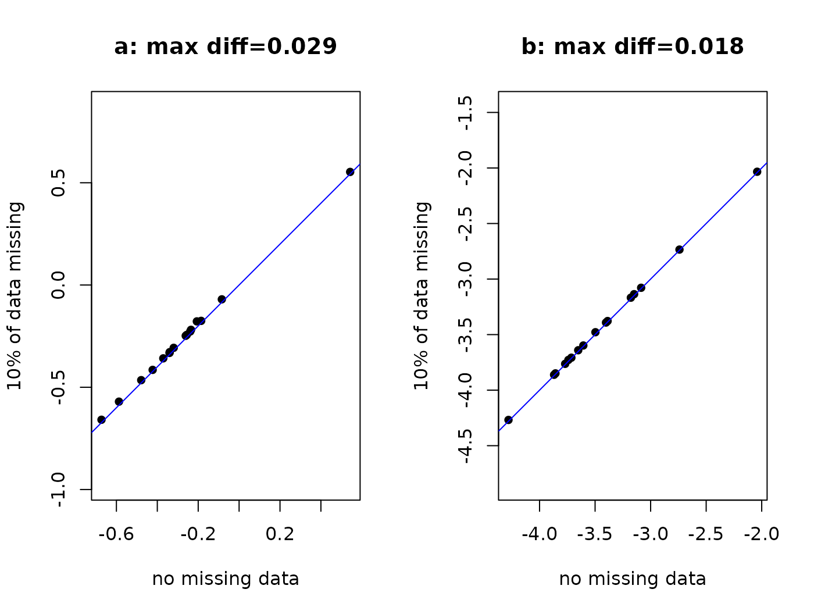
Scatterplots of fitted parameters, values on the
-axis
correspond to normalisation without missing data (fit1),
values on the
-axis
to normalisation with around 10% missing data (fit2).
Note that p1 and p2 would differ more if we
used a different value than 1 for the lts.quantile argument
in the above calls of vsn2. This is because the outlier
removal algorithm will, for this dataset, identify different sets of
features as outliers for fit1 and fit2 and
consequently the optimisation result will be slightly different; this
difference is arguably negligible compared to the noise level in the
data.
Normalisation with ‘spike-in’ probes
Normally, VSN uses all features on the array to fit the calibration and transformation parameters, and the algorithm relies, to a certain extent, on the assumption that most of the features’ target genes are not differentially expressed (see also Section @ref(sec:mostunch)). If certain features are known to correspond to, or not to correspond to, differentially expressed targets, then we can help the algorithm by fitting the calibration and transformation parameters only to the subset of features for which the “not differentially expressed” assumption is most appropriate, and then applying the calibration and transformation to all features. For example, some experimental designs provide “spike-in” control spots for which we know that their targets’ abundance is the same across all arrays (and/or colours).
For demonstration, let us assume that in the kidney
data, features 100 to 200 are spike-in controls. Then we can obtain a
normalised dataset nkid as follows.
spikeins = 100:200
spfit = vsn2(kidney[spikeins,], lts.quantile=1)
nkid = predict(spfit, newdata=kidney)Note that if we are sufficiently confident that the
spikeins subset is really not differentially expressed, and
also has no outliers for other, say technical, reasons, then we can set
the robustness parameter lts.quantile to 1. This
corresponds no robustness (least sum of squares regression), but makes
most use of the data, and the resulting estimates will be more precise,
which may be particularly important if the size of the
spikeins set is relatively small.
Not that this explicit subsetting strategy is designed for features
for which we have a priori knowledge that their normalised intensities
should be unchanged. There is no need for you to devise data-driven
rules such as using a first call to VSN to get a preliminary
normalisation, identify the least changing features, and then call VSN
again on that subset. This strategy is already built into the VSN
algorithm and is controlled by its lts.quantile parameter.
Please see Section @ref(sec:mostunch) and reference (Huber, Heydebreck, Sültmann, et al. 2003) for
details.
Normalisation against an existing reference dataset
So far, we have considered the joint normalisation of a set of arrays to each other. What happens if, after analysing a set of arrays in this fashion, we obtain some additonal arrays? Do we re-run the whole normalisation again for the complete, new and bigger set of arrays? This may sometimes be impractical.
Suppose we have used a set of training arrays for setting up a classifier that is able to discriminate different biological states of the samples based on their mRNA profile. Now we get new test arrays to which we want to apply the classifier. Clearly, we do not want to re-run the normalisation for the whole, new and bigger dataset, as this would change the training data; neither can we normalise only the test arrays among themselves, without normalising them towards the reference training dataset. What we need is a normalisation procedure that normalises the new test arrays towards the existing reference dataset without changing the latter.
To simulate this situation with the available example data, pretend
that the Cy5 channels of the lymphoma dataset can be
treated as 8 single-colour arrays, and fit a model to the first 7.
ref = vsn2(lymphoma[, ismp[1:7]])Now we call vsn2 on the 8-th array, with the output from
the previous call as the reference.
f8 = vsn2(lymphoma[, ismp[8]], reference = ref)We can compare this to what we get if we fit the model to all 8 arrays,
fall = vsn2(lymphoma[, ismp])
coefficients(f8)[,1,]## [1] -0.396 -3.509
coefficients(fall)[,8,]## [1] -0.323 -3.507and compare the resulting values in the scatterplot shown in Figure @ref(fig:ref): they are very similar.
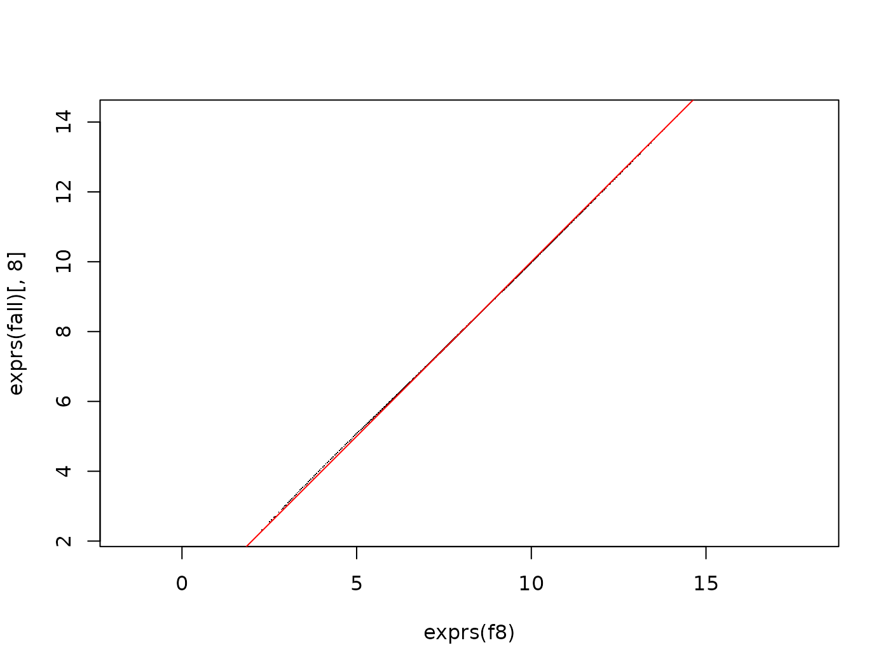
Scatterplot of normalised intensities after normalisation by reference
(-axis,
f8) and joint normalisation
(-axis,
fall). There is good agreement.
More details on this can be found in the vignettes Verifying and assessing the performance with simulated data and Likelihood Calculations for vsn that come with this package.
The calibration parameters
If is the matrix of uncalibrated data, with indexing the rows and the columns, then the calibrated data is obtained through scaling by and shifting by :
where is the so-called stratum for feature . In the simplest case, there is only one stratum, i.e. the index is always equal to 1, or may be omitted altogether. This amounts to assuming that the data of all features on an array were subject to the same systematic effects, such that an array-wide calibration is sufficient.
A model with multiple strata per array may be useful for spotted arrays. For these, stratification may be according to print-tip (Dudoit et al. 2002) or PCR-plate (Huber, Heydebreck, and Vingron 2003). For oligonucleotide arrays, it may be useful to stratify the features by physico-chemical properties, e.g., to assume that features of different sequence composition attract systematically different levels of unspecific background signal.
The transformation to a scale where the variance of the data is approximately independent of the mean is
with two parameters and . Equations @ref(eq:cal) and @ref(eq:vs) can be combined, so that the whole transformation is given by
Here, and are the combined calibation and transformation parameters for features from stratum and sample . Using the parameter as defined here rather than appears to make the numerical optimisation more reliable (less ill-conditioned).
We can access the calibration and transformation parameters through
coef(fit)[1,,]## [,1] [,2]
## [1,] -0.550 -5.84
## [2,] -0.535 -5.86For a dataset with
samples and
strata, coef(fit) is a numeric array with dimensions
.
For the example data that was used in Section @ref(sec:overv) to
generate fit,
and
.
coef(fit)[s, i, 1], the first line in the results of the
above code chunk, is what was called
in Eqn. @ref(eq:transf), and coef(fit)[s, i, 2], the second
line, is
.
The calibration parameters and the additive-multiplicative error model
VSN is based on the additive-multiplicative error model Huber et al. (2004), which predicts a quadratic variance-mean relationship of the form (Huber et al. 2002)
This is a general parameterization of a parabola with three parameters , and . Here, is the expectation value (mean) of the signal, and the variance. is also called the coefficient of variation, since for large , . The minimum of is , this is the variance of the additive noise component. It is attained at , and this is the expectation value of the additive noise component, which ideally were zero (), but in many applications is different from zero. Only the behaviour of for is typically relevant.
The parameters and from Equation @ref(eq:transf)10 and the parameters of the additive-multiplicative error model are related by (Huber et al. 2002)
This relationship is not 1:1, and it has a divergence at ; both of these observations have practical consequences, as explained in the following.
- The fact that Equations @ref(eq:errmod2trsf) do not constitute a 1:1
relationship means that multiple parameter sets of the
additive-multiplicative error model can lead to the same transformation.
This can be resolved, for example, if the coefficient of variation
is obtained by some other means than the
vsn2function. For example, it can be estimated from the standard deviation of the VSN-transformed data, which is, in the approximation of the delta method, the same as the coefficient of variation Huber, Heydebreck, Sültmann, et al. (2003). Then,
- The divergence for can be a more serious problem. In some datasets, is in fact very small. This is the case if the size of the additive noise is negligible compared to the multiplicative noise throughout the dynamic range of the data, even for the smallest intensities. In other words, the additive-multiplicative error model is overparameterized, and a simpler multiplicative-only model would be good enough. VSN is designed to still produce reasonable results in these cases, in the sense that the transformation stabilizes the variance (it turns essentially into the usual logarithm transformation), but the resulting fit coefficients can be unstable.
The assessment of the precision of the estimated values of and (e.g. by resampling, or by using replicate data) is therefore usually not very relevant; what is relevant is an assessment of the precision of the estimated transformation, i.e. how much do the transformed values vary (Huber, Heydebreck, Sültmann, et al. 2003).
More on calibration
Now suppose the kidney example data were not that well measured, and the red channel had a baseline that was shifted by 500 and a scale that differed by a factor of :
We can again call vsn2 on these data
bfit = vsn2(bkid)
Scatterplot for the badly biased bkid data: log-log scale.
Scatterplot for the badly biased bkid data: after
calibration and transformation with vsn.
coef(bfit)[1,,]## [,1] [,2]
## [1,] -2.011 -4.45
## [2,] -0.535 -5.86Notice the change in the parameter of the red channel: it is now larger by about , and the shift parameter has also been adjusted.
Variance stabilisation without calibration
It is possible to force
and
for all
and
in Equation @ref(eq:cal) by setting vsn2’s parameter
calib to none. Hence, only the global variance
stabilisation transformation @ref(eq:vs) will be applied, but no column-
or row-specific calibration.
Here, I show an example where this feature is used in conjunction with quantile normalisation.
lym_q = normalizeQuantiles(exprs(lymphoma))
lym_qvsn = vsn2(lym_q, calib="none")
plot(exprs(lym_qvsn)[, 1:2], pch=".", main="lym_qvsn")Scatterplot between the red and green intensities of the array of the lymphoma dataset after quantile normalisation followed by VSN variance stabilisation without calibration.
plot(exprs(lym)[,1], exprs(lym_qvsn)[, 1],
main="lym_qvsn vs lym", pch=".",
ylab="lym_qvsn[,1]", xlab="lym[,1]")
Comparison of the values calculated in this section, for CH1 of the
first array, to those of VSN variance stabilisation with affine
calibration (lym was computed in Section
@ref(sec:lymphoma)).
Assessing the performance of VSN
VSN is a parameter estimation algorithm that fits the parameters for a certain model. In order to see how good the estimator is, we can look at bias, variance, sample size dependence, robustness against model misspecificaton and outliers. This is done in the vignette Verifying and assessing the performance with simulated data that comes with this package.
Practically, the more interesting question is how different microarray calibration and data transformation methods compare to each other. Two such comparisons were made in reference (Huber et al. 2002), one with a set of two-colour cDNA arrays, one with an Affymetrix genechip dataset. Fold-change estimates from VSN led to higher sensitivity and specificity in identifying differentially expressed genes than a number of other methods.
A much more sophisticated and wider-scoped approach was taken by the Affycomp benchmark study. It uses two benchmark datasets: a Spike-In dataset, in which a small number of cDNAs was spiked in at known concentrations and over a wide range of concentrations on top of a complex RNA background sample; and a Dilution dataset, in which RNA samples from heart and brain were combined in a number of dilutions and proportions. The design of the benchmark study, which has been open for anyone to submit their method, was described in (Cope et al. 2004). A discussion of its results was given in (Irizarry et al. 2006). One of the results that emerged was that VSN compares well with the background correction and quantile normalization method of RMA; both methods place a high emphasis on precision of the expression estimate, at the price of a certain bias (see also Section @ref(sec:shrink)). Another result was that reporter-sequence specific effects (e.g., the effect of GC content) play a large role in these data and that substantial improvements can be achieved when they are taken into account (something which VSN does not do).
Of course, the two datasets that were used in Affycomp were somewhat artificial: they had fewer differentially expressed genes and were probably of higher quality than in most real-life applications. And, naturally, in the meanwhile the existence of this benchmark has led to the development of new processing methods where a certain amount of overfitting may have occured.
I would also like to note the interaction between normalization/preprocessing and data quality. For data of high quality, one can argue that any decent preprocessing method should produce more or less the same results; differences arise when the data are problematic, and when more or less successful measures may be taken by preprocessing methods to correct these problems.
VSN, shrinkage and background correction
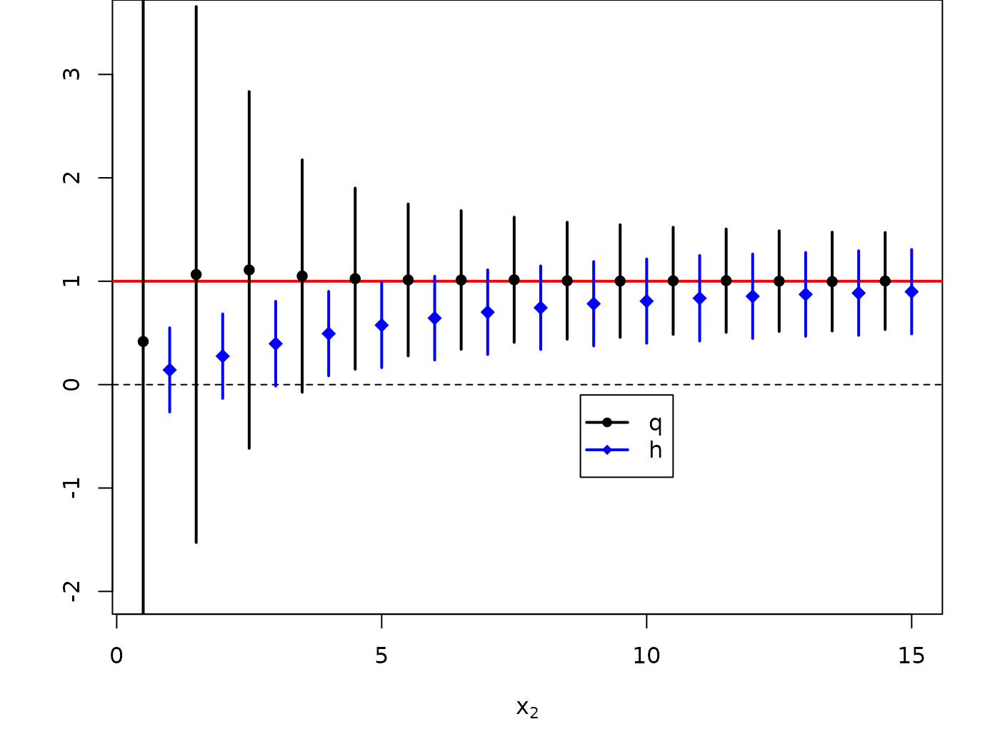
The shrinkage property of the generalised log-ratio. Blue diamonds and error bars correspond to mean and standard deviation of the generalised log-ratio , as obtained from VSN, and black dots and error bars to the standard log-ratio (both base 2).
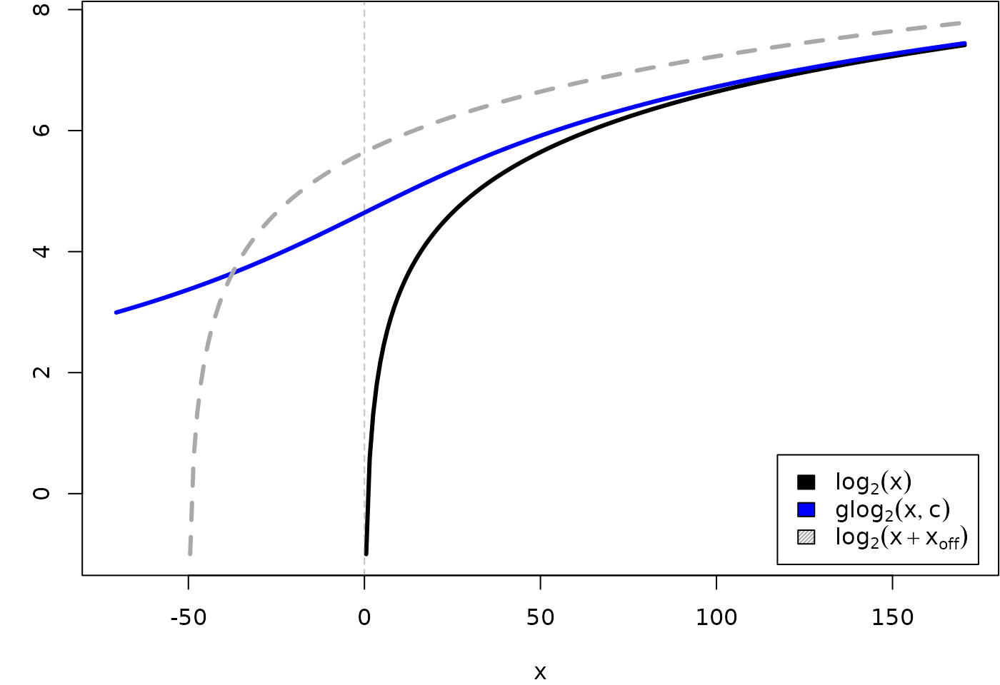
Graphs of the functions. , glog, and , where and .
Generalised log-ratios can be viewed as a shrinkage estimator: for low intensities either in the numerator and denominator, they are smaller in absolute value than the standard log-ratios, whereas for large intensities, they become equal. Their advantage is that they do not suffer from the variance divergence of the standard log-ratios at small intensities: they remain well-defined and have limited variance when the data come close to zero or even become negative.
An illustration is shown in Figure @ref(fig:shrink). Data were generated from the additive-multiplicative error model Huber et al. (2004). The horizontal line corresponds to the true -ratio (corresponding to a factor of 2). For intensities that are larger than about ten times the additive noise level , generalised log-ratio and standard log-ratio coincide. For smaller intensities, we can see a variance-bias trade-off: has almost no bias, but a huge variance, thus an estimate of the fold change based on a limited set of data can be arbitrarily off. In contrast, keeps a constant variance – at the price of systematically underestimating the true fold change. This is the main argument for using a variance stabilising transformation.
Note that there is also some bias in the behaviour of for small , particularly at . This results from the occurence of negative values in the data, which are discarded from the sampling when the (log-)ratio is computed.
Please consult the references for more on the mathematical background Huber, Heydebreck, Sültmann, et al. (2003).
It is possible to give a Bayesian interpretation: our prior assumption is the conservative one of no differential expression. Evidence from a feature with high overall intensity is taken strongly, and the posterior results in an estimate close to the empirical intensity ratio. Evidence from features with low intensity is downweighted, and the posterior is still strongly influenced by the prior.
Quality assessment
Quality problems can often be associated with physical parameters of
the manufacturing or experimental process. Let us look a bit closer at
the lymphoma data. Recall that M is the 9216 times 8 matrix
of generalized log-ratios and A a matrix of the same size
with the average
glog-transformed
intensities. The dataframe arrayGeometry (from Section
@ref(sec:strata)) contains, for each array feature, the identifier of
the print-tip by which it was spotted and the row and column within the
print-tip sector. Figure @ref(fig:lymbox) shows the boxplots of A values
of array CLL-13 stratified by row.
colours = hsv(seq(0,1, length = nsr), 0.6, 1)
j = "CLL-13"
boxplot(A[, j] ~ arrayGeometry$spotrow, col = colours, main = j, ylab = "A", xlab = "spotrow")Boxplot of A values of array CLL-13 stratified by within-sector row. The features in rows 22 and 23 are all very dim.
You may want to explore similar boxplots for other stratifying factors such as column within print-tip sector or print-tip sector and look at these plots for the other arrays as well.
In Figure @ref(fig:lymbox), we see that the features in rows 22 and 23 are all very dim. If we now look at these data in the --plot (Figure @(fig:lymquscp)), we see that these features not only have low -values, but fall systematically away from the line.
plot(A[,j], M[,j], pch = 16, cex = 0.3,
col = ifelse(arrayGeometry$spotrow%in%(22:23), "orange", "black"))
abline(h = 0, col = "blue")![MA-plot of the data from array `r j`. Dots coloured in orange are from rows 22 and 23. A possible explanation may be as follows (although I do not know for sure that this is the right explanation): The PCR product (cDNA) that is spotted on these arrays is put on by a print head that sucks cDNA out of microtitre plates and deposits them in spots one after another, row by row. If the content of one plate is faulty, this results in a set of subsequent spots that are faulty. Because the 16 print-tip sectors are spotted in parallel, this affects all sectors in the same way.](A-vsn_files/figure-html/lymquscp-1.png)
MA-plot of the data from array r j. Dots coloured in orange
are from rows 22 and 23. A possible explanation may be as follows
(although I do not know for sure that this is the right explanation):
The PCR product (cDNA) that is spotted on these arrays is put on by a
print head that sucks cDNA out of microtitre plates and deposits them in
spots one after another, row by row. If the content of one plate is
faulty, this results in a set of subsequent spots that are faulty.
Because the 16 print-tip sectors are spotted in parallel, this affects
all sectors in the same way.
Hence, in a naive analysis the data from these features would be interpreted as contributing evidence for differential expression, while they are more likely just the result of a quality problem. So what can we do? There are some options:
- Flag the data of the affected features as unreliable and set them aside from the subsequent analysis.
- Use a more complex, stratified normalisation method that takes into account the different row behaviours, for example, VSN with strata (see Section @ref(sec:strata)).
- It has also been proposed to address this type of problem by using a
non-linear regression on the
-values,
for example the
loessnormalization of reference (Yang et al. 2001) that simply squeezes the --plot to force the centre of the distribution of to lie at 0 along the whole -range.
An advantage of Option 3 is that it works without knowing the real underlying stratifying factor. However, it assumes that the stratifying factor is strongly confounded with , and that biases that it causes can be removed through a regression on .
In the current example, if we believe that the real underlying stratifying factor is indeed row within sector, this assumption means that (i) few of the data points from rows 22 and 23 have high -values, and that (ii) almost all data points with very low values are from these rows; while (i) appears tenable, (ii) is definitely not the case.
Stratifying factors such as print-tip, PCR plate, reporter-sequence
By default, the VSN method assumes that the measured signal increases, to sufficient approximation, proportionally to the mRNA abundance of gene on array (or in colour channel ):
For a series of single-colour arrays, , and the different factors reflect the different initial amounts of sample mRNA or different overall reverse transcription, hybridisation and detection efficiencies. The feature affinity contains factors that affect all measurements with feature in the same manner, such as sequence-specific labelling efficiency. The are assumed to be the same across all arrays. There can be a non-zero overall offset . For a two-colour cDNA array, , and the take into account the different overall efficiencies of the two dyes11.
Equation @ref(eq:assumption1) can be generalised to
that is, the background term
and the gain factor
can be different for different groups
of features on an array. The VSN methods allows for this option by using
the strata argument of the function vsn2. We
have seen an example above where this could be useful. For Affymetrix
genechips, one can find systematic dependences of the affinities
and the background terms
on the reporter sequence.
Nevertheless, there are situations in which either assumption @ref(eq:assumption1) or @ref(eq:assumption2) is violated, and these include:
- Saturation
- The biochemical reactions and/or the photodetection can be run in such a manner that saturation effects occur. It may be possible to rescue such data by using non-linear transformations. Alternatively, it is recommended that the experimental parameters are chosen to avoid saturation.
- Batch effects
- The feature affinities may differ between different manufacturing batches of arrays due, e.g., to different qualities of DNA amplification or printing. VSN cannot be used to simultaneously calibrate and transform data from different batches.
How to reliably diagnose and deal with such violations is beyond the scope of this vignette; see the references for more Dudoit et al. (2002).
Most genes unchanged assumption
With respect to the VSN model fitting, data from differentially
transcribed genes can act as outliers (but they do not necessarily need
to do so in all cases). The maximal number of outliers that do not
gravely affect the model fitting is controlled by the parameter
lts.quantile. Its default value is 0.9, which allows for
10% outliers. The value of lts.quantile can be reduced down
to 0.5, which allows for up to 50% outliers. The maximal value is 1,
which results in a least-sum-of-squares estimation that does not allow
for any outliers.
So why is this parameter lts.quantile user-definable and
why don’t we just always use the most “robust” value of 0.5? The answer
is that the precision of the estimated VSN parameters is better the more
data points go into the estimates, and this may especially be an issue
for arrays with a small number of features12. So if you are
confident that the number of outliers is not that large, using a high
value of lts.quantile can be justified.
There has been confusion on the role of the ``most genes unchanged assumption’’, which presumes that only a minority of genes on the arrays is detectably differentially transcribed across the experiments. This assumption is a sufficient condition for there being only a small number of outliers, and these would not gravely affect the VSN model parameter estimation. However, it is not a necessary condition: the parameter estimates and the resulting normalised data may still be useful if the assumption does not hold, but if the effects of the data from differentially transcribed genes balance out.
Acknowledgements
I acknowledge helpful comments and feedback from Anja von Heydebreck, Richard Bourgon, Martin Vingron, Ulrich Mansmann and Robert Gentleman. The active development of the vsn package was from 2001 to 2003, and most of this document was written during that time (although the current layout is more recent).
Session info
## R version 4.6.1 (2026-06-24)
## Platform: x86_64-pc-linux-gnu
## Running under: Ubuntu 24.04.5 LTS
##
## Matrix products: default
## BLAS: /usr/lib/x86_64-linux-gnu/openblas-pthread/libblas.so.3
## LAPACK: /usr/lib/x86_64-linux-gnu/openblas-pthread/libopenblasp-r0.3.26.so; LAPACK version 3.12.0
##
## locale:
## [1] LC_CTYPE=C.UTF-8 LC_NUMERIC=C LC_TIME=C.UTF-8
## [4] LC_COLLATE=C.UTF-8 LC_MONETARY=C.UTF-8 LC_MESSAGES=C.UTF-8
## [7] LC_PAPER=C.UTF-8 LC_NAME=C LC_ADDRESS=C
## [10] LC_TELEPHONE=C LC_MEASUREMENT=C.UTF-8 LC_IDENTIFICATION=C
##
## time zone: UTC
## tzcode source: system (glibc)
##
## attached base packages:
## [1] stats graphics grDevices utils datasets methods base
##
## other attached packages:
## [1] limma_3.68.5 hgu95av2cdf_2.18.0 affydata_1.60.0
## [4] affy_1.90.0 ggplot2_4.0.3 vsn_3.81.1
## [7] Biobase_2.72.0 BiocGenerics_0.58.1 generics_0.1.4
## [10] BiocStyle_2.40.0
##
## loaded via a namespace (and not attached):
## [1] KEGGREST_1.52.2 gtable_0.3.6 xfun_0.61
## [4] bslib_0.12.0 lattice_0.22-9 vctrs_0.7.3
## [7] tools_4.6.1 stats4_4.6.1 tibble_3.3.1
## [10] AnnotationDbi_1.74.0 RSQLite_3.53.3 blob_1.3.0
## [13] pkgconfig_2.0.3 KernSmooth_2.23-26 RColorBrewer_1.1-3
## [16] S7_0.2.2 desc_1.4.3 S4Vectors_0.50.3
## [19] lifecycle_1.0.5 compiler_4.6.1 farver_2.1.2
## [22] textshaping_1.0.5 Biostrings_2.80.2 statmod_1.5.2
## [25] Seqinfo_1.2.0 codetools_0.2-20 htmltools_0.5.9
## [28] sass_0.4.10 yaml_2.3.12 preprocessCore_1.74.0
## [31] crayon_1.5.3 hexbin_1.28.6 pillar_1.11.1
## [34] pkgdown_2.2.1 jquerylib_0.1.4 cachem_1.1.0
## [37] tidyselect_1.2.1 digest_0.6.39 dplyr_1.2.1
## [40] bookdown_0.48 labeling_0.4.3 fastmap_1.2.0
## [43] grid_4.6.1 cli_3.6.6 magrittr_2.0.5
## [46] withr_3.0.3 scales_1.4.0 bit64_4.8.6
## [49] XVector_0.52.0 rmarkdown_2.32 httr_1.4.9
## [52] affyio_1.82.0 bit_4.6.0 otel_0.2.0
## [55] ragg_1.5.2 png_0.1-9 memoise_2.0.1
## [58] evaluate_1.0.5 knitr_1.52 IRanges_2.46.0
## [61] rlang_1.3.0 glue_1.8.1 DBI_1.3.0
## [64] BiocManager_1.30.27 jsonlite_2.0.0 R6_2.6.1
## [67] systemfonts_1.3.2 fs_2.1.0